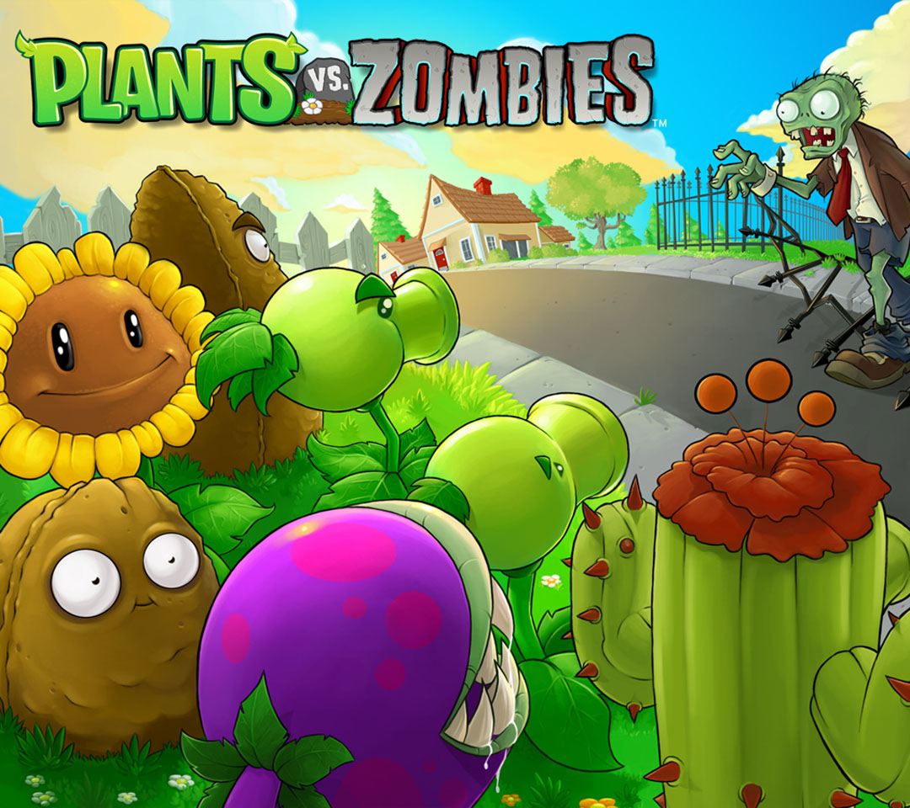

植物大战僵尸
《植物大战僵尸》是由美国宝开游戏公司(PopCap Games)开发的一款益智策略类塔防御战游戏，也是《植物大战僵尸》系列的第一部作品。于2009年5月5日发售。
玩家通过武装多种植物切换不同的功能，快速有效地把僵尸阻挡在入侵的道路上。不同的敌人，不同的玩法构成五种不同的游戏模式，加之黑夜、浓雾以及泳池之类的障碍增加了游戏挑战性。
该作在PC上同时有普通版、年度版、长城版、西游版等多个版本。